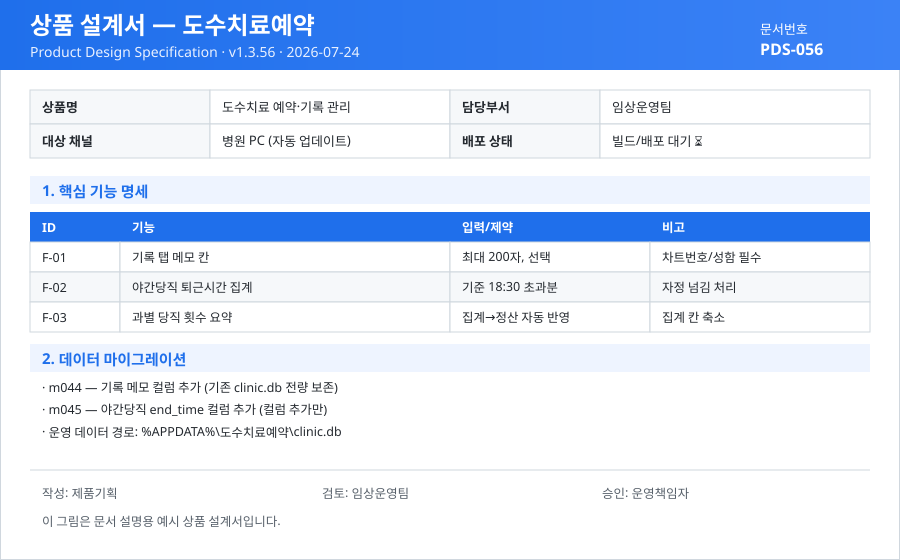

clinic.db)는 절대 건드리지 않습니다.
예약, 진료 기록, 메모를 한 화면에서 입력·조회.
야간당직 퇴근시각 입력과 초과 근무시간 자동 집계.
SHA256 검증 후 교체, 기존 데이터 100% 보존.

| ID | 기능 | 입력·제약 | 비고 |
|---|---|---|---|
| F-01 | 기록 탭 메모 칸 | 선택 입력, 최대 200자 | 차트번호 또는 성함은 필수 |
| F-02 | 야간당직 퇴근시각 입력 | 직원·날짜별 시각 | 여러 명이면 각자 다른 시각 |
| F-03 | 야간당직 시간 집계 | 기준(기본 18:30) 초과분 | 자정 넘김 정상 계산 |
| F-04 | 과별 당직 횟수 요약 | 직원별 횟수+시간 표시 | 집계→정산 자동 반영 |
차트번호·성함·직원 옆에 메모 칸이 추가됐습니다. 추가 폼·목록 표·수정 창에서 입력·확인할 수 있으며(최대 200자, 선택), 메모만 단독으로는 저장되지 않습니다 — 차트번호 또는 성함은 필수입니다.
관리자 탭에서 업데이트 확인을 누르면 아래 순서로 자동 처리됩니다.
데이터는 설치 폴더가 아니라 아래 경로에 저장되며, 업데이트는 프로그램(exe·내부 파일)만 교체합니다.
%APPDATA%\도수치료예약\ clinic.db / config.json / schema_version.txt / backups\
| 마이그레이션 | 내용 | 안전성 |
|---|---|---|
| m044 | 기록 메모 컬럼 추가 | 컬럼 추가만 · 기존 데이터 전량 보존 |
| m045 | 야간당직 퇴근시각(end_time) 컬럼 추가 | 재실행 안전 · 무손실 |
관리자 탭의 업데이트 매니페스트 URL 입력란에 아래 주소만(앞뒤 공백 없이) 입력 후 저장하고 “업데이트 확인”을 누르면 됩니다. ZIP 주소·SHA256은 직접 입력하지 않습니다.
https://hu28035036-ux.github.io/clinic-updates/manifest.json
초기값 admin1234 — 첫 로그인 후 관리자 탭에서 반드시 변경하세요.
업데이트 후 화면이 이전과 같아 보이면 Ctrl + Shift + R 로 캐시를 새로고침하세요.
| 항목 | 값 |
|---|---|
| 제품 소스 | hu28035036-ux/clinic-app |
| 배포 채널 | hu28035036-ux/clinic-updates (매니페스트 + 릴리스 노트) |
| 현재 버전 | v1.3.56 (2026-07-24) |
| 강제 업데이트 | 아니오 (mandatory = false) |
release-v*.md)를 참고하세요.